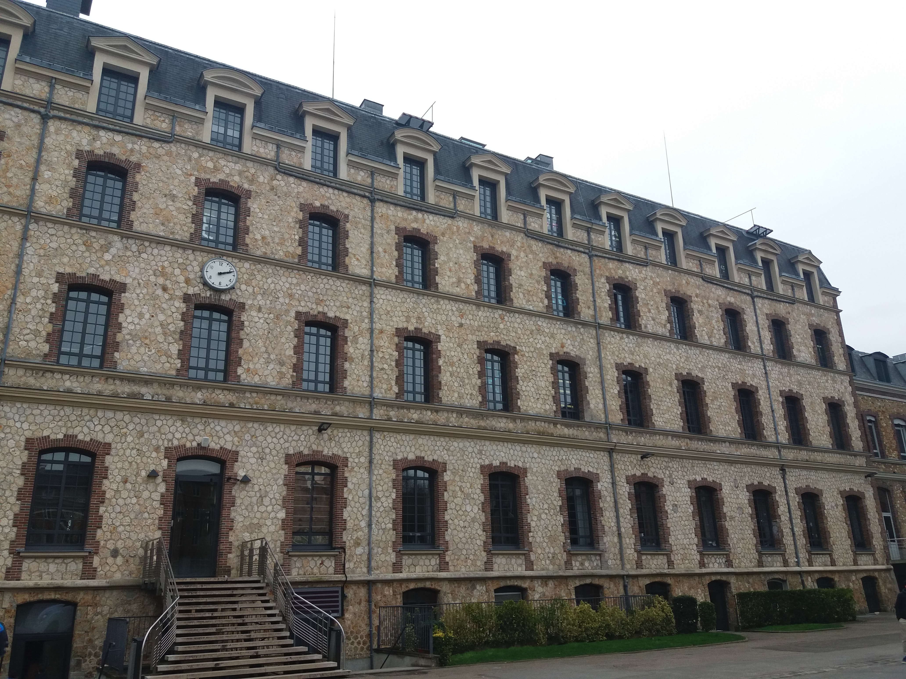
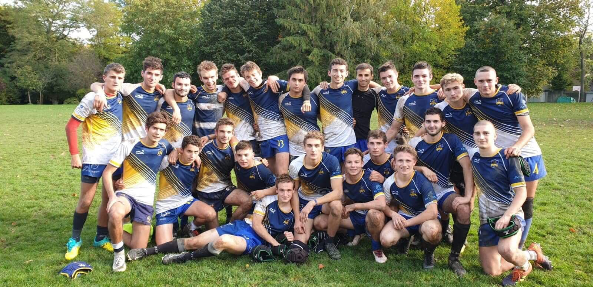

La vie à Ginette
Ginette, ça ne se raconte pas, ça se vit
Cher visiteur, bonjour,
tu te demandes sûrement à quoi ressemble la vie à Ginette.
Il est malheureusement impossible d'en donner une description exhaustive tellement celle-ci est intense.
En voici donc (comme dirait le prof de Maths) une "approche informelle".
L'internat
L’internat de Ginette, c’est notre deuxième maison et peut-être bientôt la tienne futur Sup. Il est immense et tous les élèves ont la chance de pouvoir y être logés.
Même si la prépa y impose une atmosphère assez studieuse, l’internat reste un endroit de partage qui vit dans les traditions de Ginette. De plus, il permet de favoriser la mixité car garçons et filles y cohabitent le jour.
En effet, les chambres des garçons sont équipées de 2 lits et de 3 bureaux (une fille peut donc venir y travailler en journée).
Bien sûr, les jeunes et jolies demoiselles retournent dans leurs forteresses avant 23h, heure à laquelle nos très gentils surveillants passent pour nous souhaiter de passer une agréable nuit.
Puisque toutes les bonnes choses ont une fin, deux changements de chambre sont organisés dans l’année.
Nous quittons également nos « piaules » pendant les vacances pour profiter d’un repos bien mérité.

Notre Dame

Elisabeth et SFR
Le Sport à Ginette
Parmi l'infinité de traditions de Ginette, nombreuses sont celles qui concernent le sport.
Le jeudi après-midi est un moment privilégié pour le pratiquer et les nombreuses équipes de rugby, de foot, de hand… seront ravi de t’accueillir.
Aux amateurs de footing, un immense parc permet de se dégourdir les jambes (le matin pour les uns, après les cours pour d’autres, jamais pour certains…).
Une salle de musculation-fitness est également à disposition des élèves 24h/24 et le gymnase est accessible pour un moment de partage entre amis le samedi soir après le redoutable devoir surveillé.
Enfin, quelques événements sportifs comme le légendaire match Ginette-Hoche rythment l’année scolaire et font vivre la merveilleuse ambiance de la BJ.

Ski

Volley

Tennis
Le jeudi après-midi
Comme tu l’as peut-être déjà remarqué futur Sup, il n’y a pas de cours le jeudi après-midi.
Certains diront que c’est nécessaire après les 3 heures de maths du matin mais ça, tu le comprendras bien assez tôt…
Même si bien sûr la pougne a sa place le jeudi comme n’importe quel autre jour de la semaine, c’est aussi un moment pour se retrouver, faire du sport, de la musique, ou se détendre tout simplement.
Des AS (activités sociales) sont également proposées pour donner des cours de soutien à des jeunes plus en difficulté ou encore visiter des personnes âgées.
Ne t’inquiète donc pas futur Sup, ton emploi du temps sera bien rempli même quand il n’y a pas cours.
Petite particularité en Piston 3, le jeudi est également le jour du dard mais ça : Tu verras…

Rugby

PomPom

GRCU